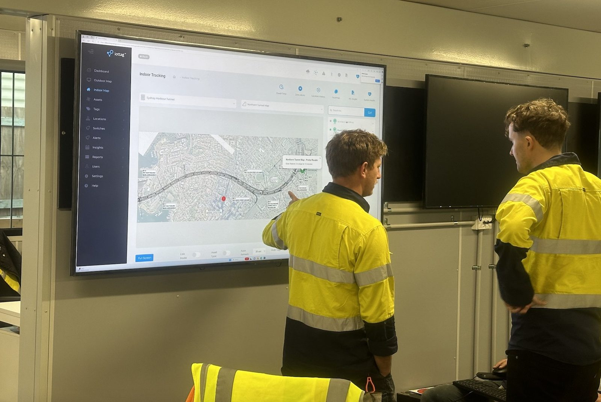
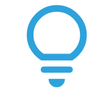
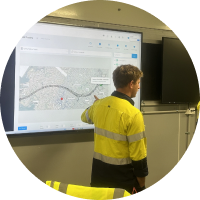

Operational Digital Twin
Understand Your
Entire Operation In Real Time
Know what’s happening. Why it matters. What to do next.
Modern operations generate enormous amounts of information across people, vehicles, equipment, materials, environmental monitoring and operational systems.
The challenge isn’t collecting more data. It’s understanding what it all means.
The iottag Operational Digital Twin continuously connects previously disconnected operational systems into a live operational understanding, helping organisations understand what is happening, why it matters and where attention should be focused.
Every System Sees Something
Atlas Sees The Whole Operation
Operations already rely on dozens of specialised systems.
Each answers a specific operational question.
Together, they describe how the operation is performing.
The challenge is that these systems rarely communicate with one another, leaving important relationships hidden and operational decisions disconnected.
Atlas continuously brings these operational systems together into one shared operational context.
Workforce
- Personnel
- Contractors
- Locations
Fleet
- Vehicles
- Traffic
- Congestion
Equipment
- Mobile Plant
- Fixed Assets
- Infrastructure
Environment
- Weather
- Gas
- Dust
Production
- Schedules
- Activities
- Equipment Status
Communications
- Radio
- Incidents
- Emergency Systems
Atlas Platform
Shared Operational Context

One Platform.
Every Part Of The Operation.
Rather than monitoring individual technologies, the Operational Digital Twin continuously creates a live operational picture across the entire operation.
This shared operational understanding enables teams to coordinate activities, respond faster and make better operational decisions.
Workforce Visibility
Know who is onsite, where they are located and how workforce activity is changing throughout the day.
Fleet Visibility
Monitor vehicle movement, traffic flow, interactions and operational activity.
Asset Visibility
Track equipment, tools, infrastructure and critical operational assets.
Environmental Awareness
Monitor weather, atmospheric conditions, dust, heat and environmental change.
Production Awareness
Understand operational activity influencing productivity, schedules and performance
Information Becomes
Intelligence When It Gains Context
Every operational system provides valuable information.
Atlas continuously connects these systems into a shared operational context, revealing relationships and dependencies that individual systems cannot identify on their own.
- People
- Vehicles
 Materials
Materials- Communications
- Production
- Equipment
 Environment
Environment
Atlas Platform
Shared Operational Context
Operational Intelligence
Better Decisions
Understanding
How Operations Change
Operational events rarely occur in isolation
Changes in one part of the operation often influence many others.
Atlas continuously analyses these relationships, helping teams understand how operational conditions evolve across the operation rather than simply responding to isolated alerts.
Ventilation Fan Failure
Reduced Airflow
Executive Insight
Atlas doesn’t simply report operational events.
It explains how changing operational conditions influence the wider operation.
Turning Operational Complexity Into Clear Decisions
Modern operations generate thousands of operational events every day.
Atlas continuously transforms this information into clear operational summaries that help every level of the organisation understand what is happening and where action should be focused.

Why does it matter?This helps operational teams, supervisors, management and executive stakeholders quickly understand changing conditions without requiring specialist interpretation.
Example Summary
Ventilation Failure — Zone 4
- Ventilation has stopped operating within Zone 4.
- Environmental monitoring indicates increasing temperature and gas concentrations downstream.
- Twenty-three personnel remain working within the affected area while vehicle movement continues through adjacent haul routes.
- Current operational conditions indicate increasing exposure until ventilation is restored.
Recommended Action
- Inspect ventilation system.
- Review workforce deployment.
- Restrict access until environmental conditions return to normal.
Shared Operational Context
Better Operational Outcomes
When every team works from the same operational understanding, decisions become faster, coordination improves and operational blind spots are reduced.
Shared Operational Context
Create one operational picture across the entire organisation.
Faster Decision Making
Understand operational change sooner.
Improved Coordination
Synchronise teams across the operation.
Reduced Operational Blind Spots
Reveal relationships traditional systems cannot.
Greater Operational Awareness
Maintain continuous awareness across people, equipment and operations.
Confident Resource Deployment
Deploy people and equipment with greater confidence.
Supporting Critical Operational Workflows
One platform supporting every stage of the operation.
- Grid
- Emergency Mustering
- Vehicle Coordination
 Incident Coordination
Incident Coordination
- Evacuation Management
- Operational Communications
- Personnel Accountability
Each links to its dedicated solution page.
One Operational View.
Every Level Of The Organisation.
Operational understanding supports better decisions across every level of the business.
Operations
Live operational awareness
Supervisors
Operational coordination
Managers
Operational performance

Executives
Portfolio-wide operational visibility

Asset Owner
Live operational awareness.
One Platform. Multiple Intelligence Systems.
The Operational Digital Twin forms the operational foundation of the Atlas Platform.
From this shared operational context, Atlas continuously creates specialised intelligence systems designed to support different operational outcomes.
Coordinate operations
Understand exposure
Understand performance
One operational platform. Multiple intelligence systems. One shared operational context.
Create A Shared Operational Understanding
Across Your Entire Operation
The most effective operational decisions begin with operational context.
Discover how the Operational Digital Twin helps organisations connect people, vehicles, equipment, environmental conditions and operational systems into one continuously evolving operational picture.